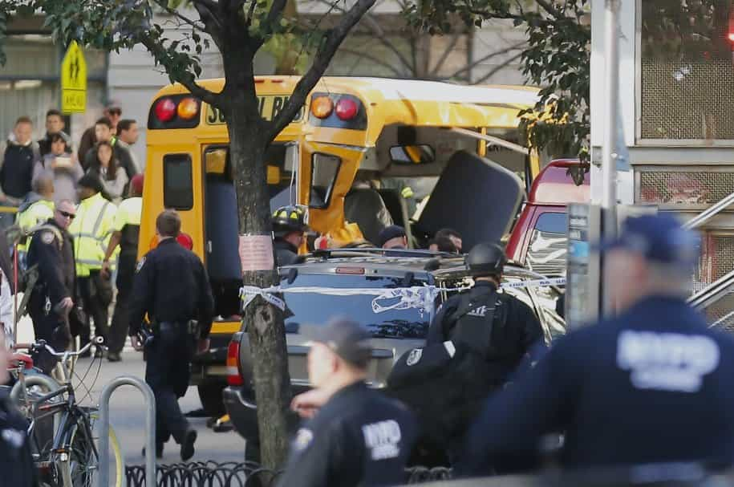

This account syndicates news from other media outlets.


A man in a pickup truck killed eight people when he drove onto the West Side bike path in lower Manhattan Tuesday afternoon — and then shouted “Allahu Akbar” as he got out of the car with fake guns, police sources said.
The suspected terror attack happened around 3:15 p.m., when a man in a flatbed pickup truck from Home Depot veered onto the bike path at West St., a few blocks north of Chambers St., police said.
The suspect, who was shot by police, then plowed his car into up to 23 people on the path, killing eight and injuring more than a dozen others, according to cops.

He continued driving south and hit another car, then got out and displayed “imitation firearms,” police said.
The man then shouted, “Allahu Akbar,” according to police sources.
Witnesses described a scene of terror, as people fled for safety.
“Jesus! A car just ran over 2 people and then crashed into a school bus. I see two dead bodies and citibikes on the floor destroyed,” a Twitter user wrote.
“What happened was there was a car crash… he came out of one of the cars. He had two guns,” a 14-year-old Stuyvesant HS student said. “We thought it was a Halloween thing. He started running around the highway. There was another guy in a green shirt that was chasing him around.”
“I heard four to six gunshots — everybody starts running,” she added.
Video of the scene shows at least two people lying limp on the street. Photos show a smashed-up Home Depot rental truck and two mangled Citi Bikes.
Counter-terror police were searching the truck for explosives.
“Oh my god I just heard gun shots and ran with my dog. Downtown. F–k,” Josh Groban tweeted.
Read Next: How Western Globalists Created Radical Islam